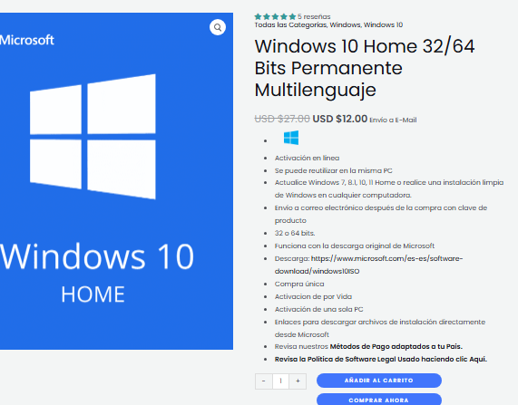
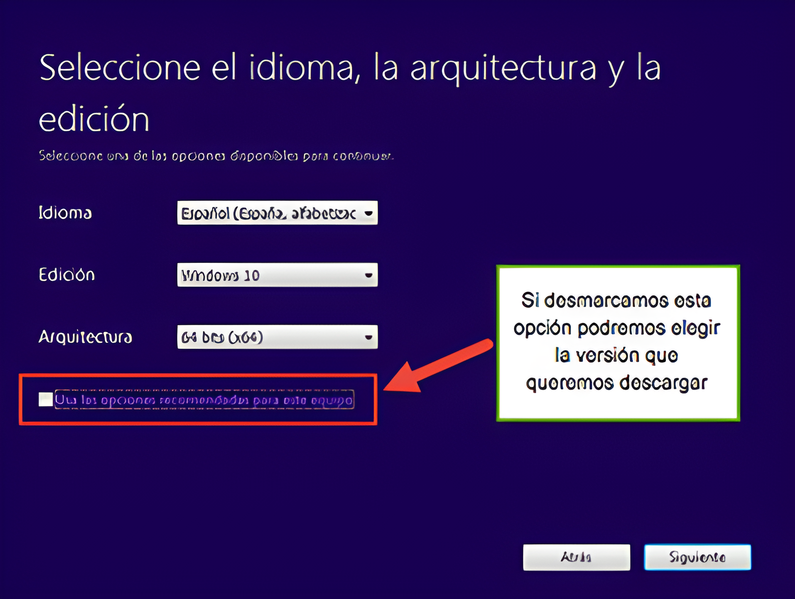

Cómo instalar, configurar y actualizar un sistema operativo.
Instalación (Windows)
Paso 1: Antes de comenzar, verifica que tu computadora cumpla con los requisitos mínimos para la versión de Windows que deseas instalar, por ejemplo, versiones recientes como Windows 10 o 11 requieren al menos 4 GB de RAM y 64 GB de espacio en disco. Si tu hardware es más antiguo, considera versiones anteriores como Windows 7 o XP, que tienen requisitos más bajos.
Paso 2: Decide si vas a comprar o descargar el sistema operativo, las licencias de Windows son obligatorias y cada una viene con una clave de producto que necesitarás durante la instalación, asegúrate de adquirir la versión adecuada (Home, Pro, etc.) según tus necesidades..
- Descargar Windows desde la pagina microsoft:
- Instalar mediante una clave de producto:
Paso 3: Antes de instalar, investiga si el software y los controladores que planeas usar son compatibles con la versión de Windows elegida, esto incluye aplicaciones esenciales y periféricos como impresoras y escáneres, visita los sitios web de los desarrolladores para obtener información actualizada sobre compatibilidad.
Paso 4: Obtener el Sistema Operativo, si compraste Windows en una tienda, recibirás un disco de instalación (DVD) y un código de producto, asegúrate de tener ambos a mano, descarga e instala si no tienes el disco, ve al sitio web oficial de Microsoft y descarga la herramienta de creación de medios, esta herramienta te permitirá crear un medio de instalación en un USB o descargar la imagen ISO del sistema operativo.

- Herramienta para crear un medio de instalación:
Paso 5: Una vez que hayas comprada la licencia de Windows e instalada la herramienta de creación de medios, el siguiente paso es crear un medio de instalación, para ello, inserta un USB en blanco que tenga al menos 8 GB de espacio disponible. Luego, ejecuta la herramienta de creación de medios de Microsoft. Selecciona la opción "Crear medio de instalación" y sigue las instrucciones para elegir el idioma, la edición de Windows y la arquitectura (32 o 64 bits), acontinuación, elige "Unidad Flash USB" y selecciona tu USB de la lista, la herramienta descargará Windows y lo instalará en el USB, como alternativa, si prefieres utilizar un DVD, puedes grabar la imagen ISO en un DVD usando un software de grabación de discos.

Paso 4: Preparar la Instalación, conecta el medio de instalación insertando el USB o DVD en la computadora donde deseas instalar Windows, luego, reinicia la computadora y accede a la BIOS/UEFI, lo cual generalmente se hace presionando teclas como F2, F10, DEL o ESC durante el arranque, dentro de la BIOS/UEFI, busca la sección de "Boot" y establece la unidad USB o DVD como la primera opción de arranque. Asegúrate de guardar los cambios antes de salir.
- SUPR (DEL), F1, F2, y en algunos casos la tecla ESC.
- Una vez dentro de la BIOS vamos al menú BOOT mediante las flechas de movimiento del teclado.
- Escogemos la opción «BOOT DEVICE PRIORITY.
- Desde esta pantalla escogeremos el orden de arranque de los dispositivos, por ejemplo: si tengo un DVD de instalación del sistema, pondremos en el primer luga el DVD-ROM y despues el HDD (Hard Disk Drive), como se muestra en la imagen siguiente.
- Una vez tenemos hecha la configuración, apretamos la tecla F10 para guardar los cambios y salir de la BIOS. De esta manera la máquina comenzará su arranque normal, y en este caso buscará el DVD donde esta el disco de instalación del S.O.
- Inicio de Windows:
- Elegimos el idioma y la configuración regional:
- Presionamos para iniciar la instalación:
- Ahora no pide la clave del producto, si de entrada no la tienemos podemos omitir este paso eligiendo «No tengo clave de producto». Muchas veces windows activará automáticamente cuando el sistema esté instalado debido a que los equipos nuevos tienen la clave del producto guardada en la BIOS o UEFI que es el nombre de las nuevas BIOS:
- Dentro del programa de instalación elegiremos la versión de nuestra licencia, en nuestro caso será «Windows 10 Home» de 64 bits:
- Es necesario aceptar los terminos del contrato, de lo contrario no podrás instalar el sistema.

- Elegiremos «Personalizada» para manejar las particiones de nuestro Disco Duro. Si tenemos particiones creadas las podremos eliminar para hacer una instalación limpia.
- Aquí podemos ver nuestro Disco Duros sin partición, limpio.
- Ahora ya comienza la instalación real del sistema.
- Recuerda el equipo se reiniciara cuantas veces pueda para completar su instación de forma eficáz.
Información básica del sistema. (2023)